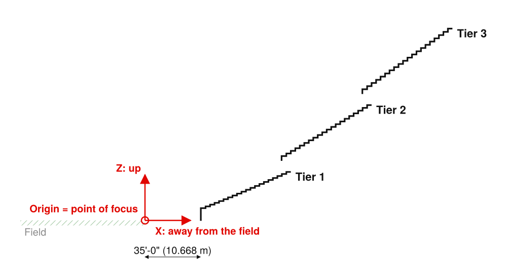
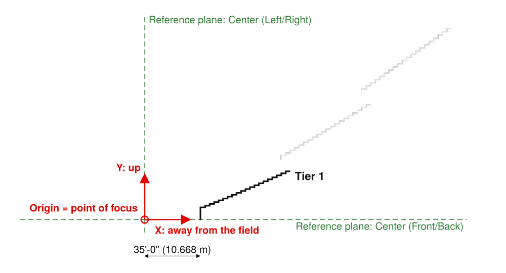
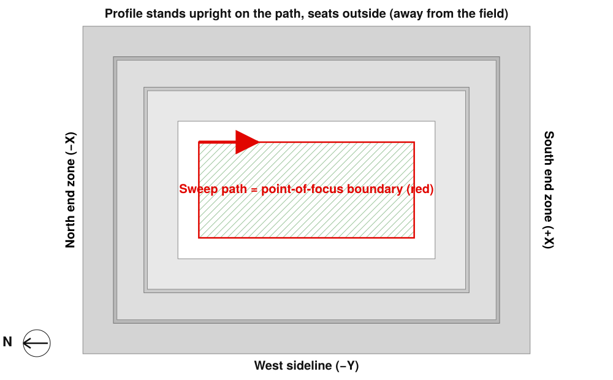
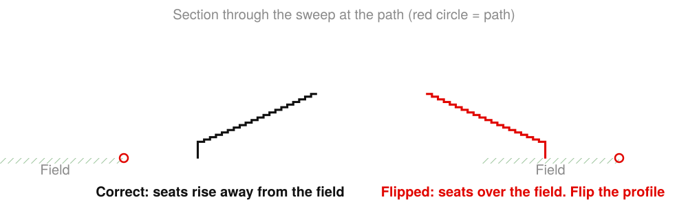

Sightline Schematic · Step-by-step guide 3 of 3
Revit: create the bowl profile families
Download the Revit package and run the Dynamo graph to create one Revit profile family per tier, ready for a sweep.
You need
- Revit 2024 with Dynamo 2.17
- A Revit project open (any project, even a new one)
- The bowl you want, open in Sightline Schematic
You get
- One Revit profile family (.rfa) per tier, saved in a folder you pick and loaded into the project
- Each profile placed at its true distance from the point of focus, so every tier sweeps along the same path
Steps
Download the Revit package
In Sightline Schematic, under Deliver › Models, click Revit package (.zip) and unzip Stadium_Bowl_Revit_R2024.zip to a folder you keep.

Know what the profile is

Because every family shares the point of focus as its origin, Tier 2 and Tier 3 already sit at their true distance and height (86'-0" and 137'-0" to the front riser in this example). You never move a profile by hand.
Open a project and start Dynamo
Open the project the bowl belongs in (or a new project). In Dynamo, File › Open Stadium_Bowl_Profile_R2024.dyn, run mode Manual. Dynamo Player works too.
Set the five inputs and run
- Input 2: metric offices use …\English\Metric Profile.rft. If your templates live elsewhere, see File › Options › File Locations › Default path for family template files.
- Input 4 names the families: Stadium_Bowl_Profile_T1, _T2, _T3. When a tier's sides differ (for example a deeper East sideline), you get one per side: Stadium_Bowl_Profile_T1_E, _T1_SEZ and so on.
- Click Run. The Result node lists each saved .rfa, its line count and “loaded”. Running again overwrites and reloads families of the same name.
Check the families
To look inside, right-click the family and choose Edit. The loop sits on the Ref. Level plan, with the point of focus where the two Center reference planes cross:

Draw the sweep path: the point-of-focus boundary

- Category Generic Models (or Mass), name it, for example Bowl Tier 1.
- Create › Forms › Sweep, then Sketch Path. Draw the boundary with the Rectangle tool from the field corners. Its size is the Field line on the workbook Summary sheet (109.73 × 48.77 m here); the corners are on the Focal path sheet. Click the green check to finish the path.
Pick the profile and check its direction
- In the Sweep panel, set Profile to Stadium_Bowl_Profile_T1. Revit places the profile at the red path point.
- Look at a 3D or section view. The seats must rise away from the field. If they lean over the field, tick Profile is Flipped in Properties (or set Angle to 180°).

Click the green check twice (finish the sweep, then Finish Model).
Repeat for each tier
- Make one sweep per tier, all on the same path, with _T2 and _T3. They land in the right place on their own.
- Families per side (_T1_E and so on): sweep each one along its own side of the boundary (Pick Path or a single line).
- A sweep mitres the corners. Sightline's chamfered or open corners are built exactly by the bowl mass graph (guide 2); use the profiles for sections, sweeps of one stand, slab edges and details.
If the graph stops
| Message in the Result node | What to do |
|---|---|
| 2. Pick the profile family template | The template path is wrong. Browse to Profile.rft (imperial) or Metric Profile.rft (metric). |
| 3. Pick a folder to save the profile families in | Input 3 is empty or the folder no longer exists. |
| No "T1 E profile" sheets in this workbook | The workbook is not from the Revit package. Download the package again. |
| Families saved but not loaded | A family document was active. Open a project, make it active and run again (Load True). |
| The profile is not in the Sweep's list | Load it with Insert › Load Family from the folder of input 3. |